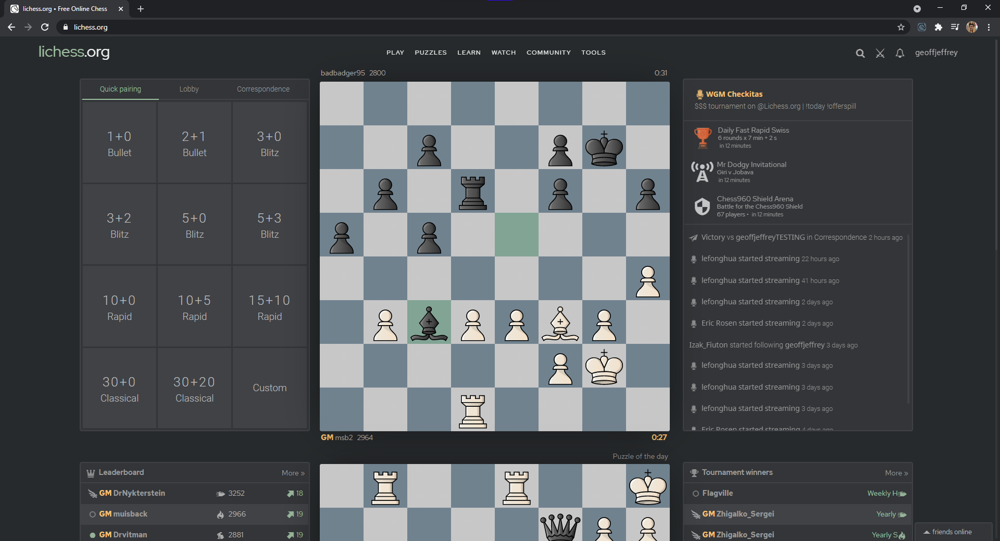
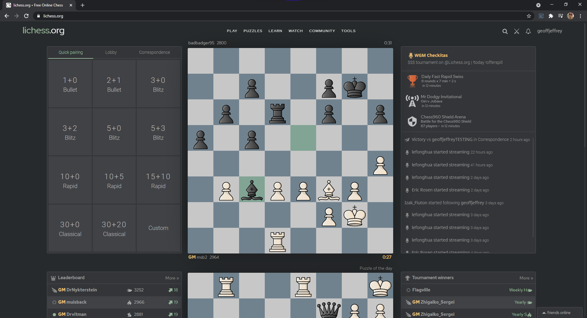
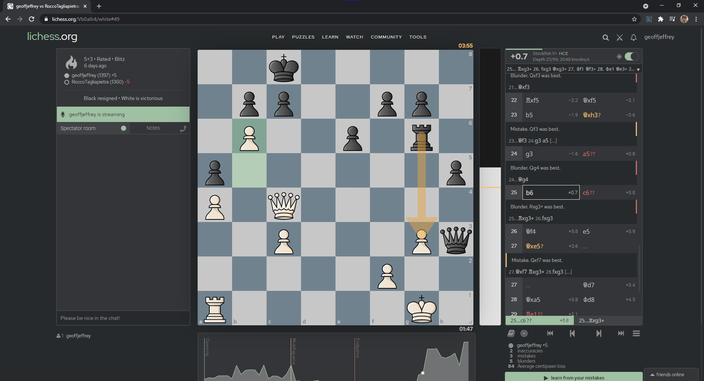
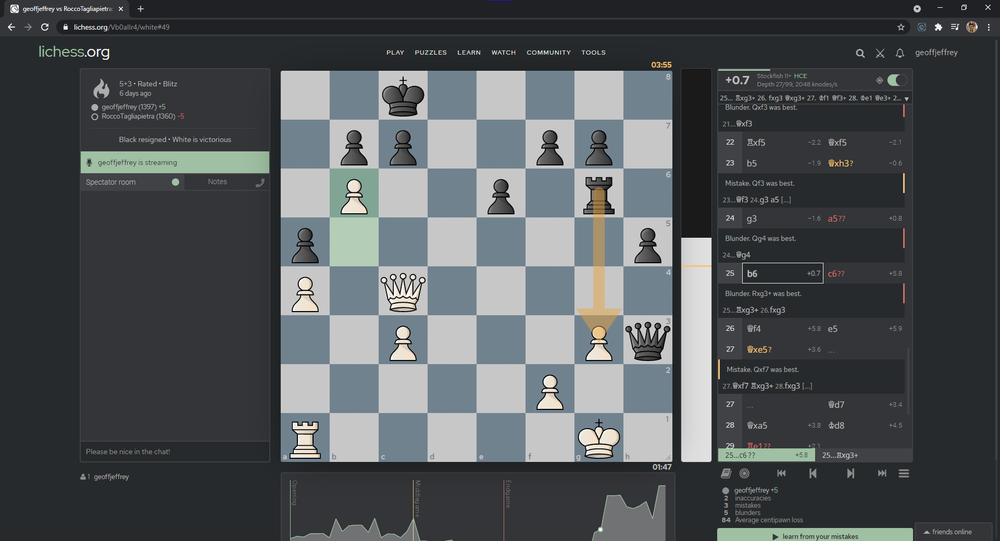

and Dylan Gross
and Dylan Gross
Lichess is a great platform that provides lots of fantastic free services like free analysis, studies, tournaments, and more. However, the site doesn't feel very contemporary, and this can turn many users off towards other platforms, and ultimately off an incredibly useful and amazing resource.
This extension is an attempt to fix that.
Prettier Lichess not only changes the visuals of lichess.org, but also allows users to completely customize the colors of the site as well. Via the extension they have control over the complete color palette. Along with this, they can import and export their color palette's at will. Below are links to a Google Drive folder and a community driven theme library on Github. Feel free to add your own designs!
Prettierlichess
It's lichess, but prettier.
 

 



Disclaimer: This extension is under constant development and the Lichess site is also changing and adding new features. As a result, some elements of the page may not be styled correctly. In general, however, the styling should work in almost all areas of the site. If you notice an element where the styling doesn't work, feel free to report it.